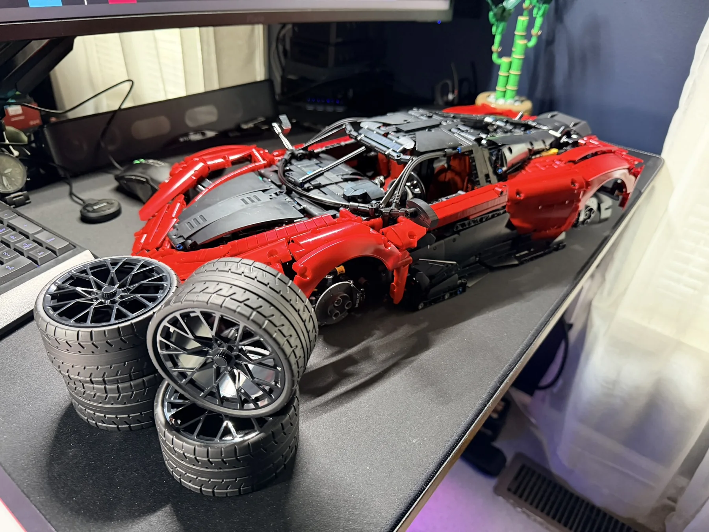
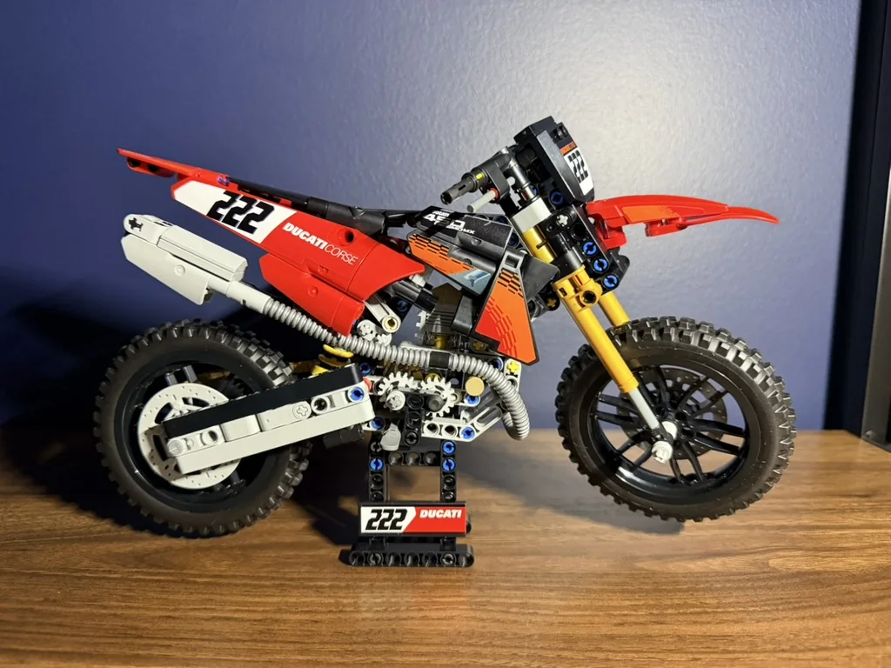
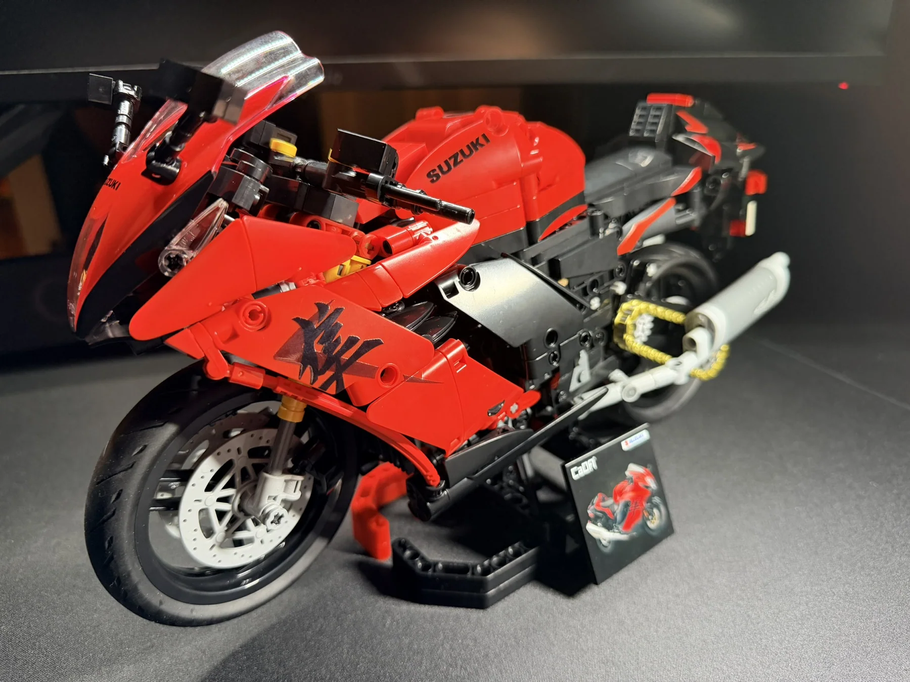
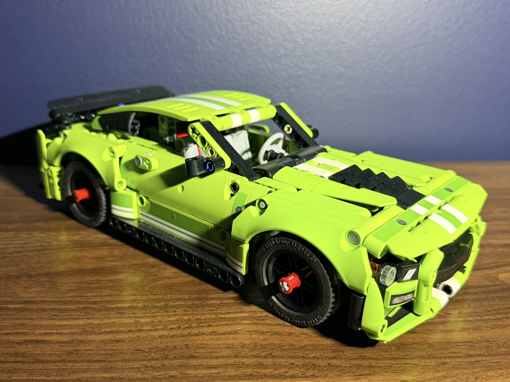

COMPLETED · NF10293
Nifeliz Asil
A challenging 4,099-piece 1:8 scale build with impressive mechanical detail.
View BuildSets worth slowing down for. Follow the process, see progress and explore the details behind each finished build.

A challenging 4,099-piece 1:8 scale build with impressive mechanical detail.
View Build
A compact 457-piece motorcycle build with suspension, chain drive and exposed mechanical detail.
View Build
My first CaDA build: a fun, challenging 1,042-piece motorcycle with intricate gearing and bold red bodywork.
View Build
A 643-piece motorcycle build featuring a Kawasaki-green frame, exposed gearing and detailed chain drive.
View Build
A bold 544-piece muscle car build with lime-green bodywork, white racing stripes and a dramatic rear spoiler.
View Build
A 234-piece blue Spiny Shell display build, sourced from BrickVivid, with bold white spikes and a sculpted shell.
View Build